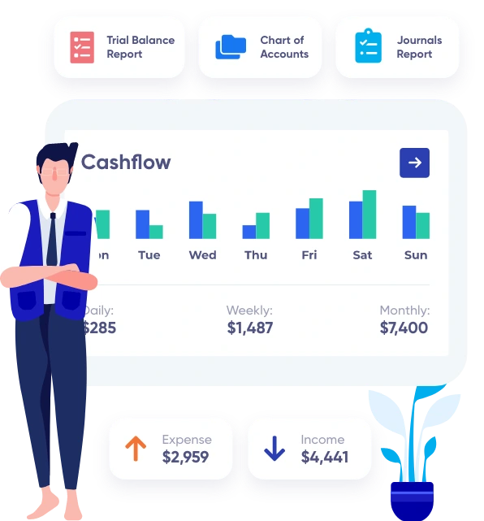

Découvrez nos fonctionnalités
Ligne de vie
Votre patient en un coup d’oeil
-
Fiche bristol passé / présent / futur
-
Voyez rapidement ce qui est fait et reste à faire
-
Accédez aux recommandations des bonnes pratiques
-
Suivez toutes les pathologies d’un patient
Parcours patient
Visible sur la ligne de vie
-
Suivez vos parcours prévention suivant l’age et le sexe
-
Créez vos parcours personnalisés
-
Suivez les parcours issus des bonnes pratiques (HAS)
-
Respectez le calendrier vaccinal
-
Respectez le parcours jeune enfant
Agenda
Pour des patients au rendez-vous
-
Prise de rendez-vous en ligne pour vos patients
-
Priorisez vos patients
-
Démarrez vos consultations instantanément
-
Planifiez vos ouvertures et absences
-
Gérez facilement vos remplaçants
-
Agenda collaboratif
Consultation
En peu de clics
-
Aperçu rapide du dossier
-
Accès aux modèles et à l'historique de votre patient
-
Dictez vos notes
-
Intégration automatique des résultats de laboratoires
-
Suivez l’évolution grâce aux courbes
-
Partagez vos documents avec le DMP
-
S’interfacer rapidement avec la ligne de vie
Prescription
Facile
-
Renouvelez une ordonnance avec un glisser déposer
-
Utilisez des modèles de prescription pour gagner du temps
-
Prescription rapide et facile, sans changer d'interface
-
Recherchez dans Vidal rapidement
-
Visualisez facilement les contre indications et surdosages
Facturation
Au cabinet et en visite
-
100% en ligne et télétransmission
-
Sélectionnez vos actes directement dans l’espace consultation
-
Suivi des remboursements des caisses AMO/AMC
-
Suivi des recettes
-
Accès secrétaire ou assistant
Echanges sécurisés
-
Alimentez et consultez facilement le DMP
-
Communiquez avec la Messagerie Sécurisée de Santé
-
Accédez à la e-prescription
-
Authentification avec Pro Santé Connect
-
Interrogation des téléservices (INSi, Ameli Pro)

Portail patient
Pour un patient acteur de sa santé
-
Prendre rendez-vous et consulter ses rendez-vous
-
Accès à la ligne de vie patient
-
Accès à son dossier médical et à celui de ses enfants
-
Accès rapide à ses ordonnances, ses certificats

Gestion des documents
-
Création de documents types (ordonnances, courriers et certificats)
-
Interopérabilité des données
Demandez à être recontacté
Vous êtes passionné.e par votre métier et le travail en équipe
?
Vous êtes attiré.e par la possibilité de co-construire un réseau
de structures de santé moderne ?